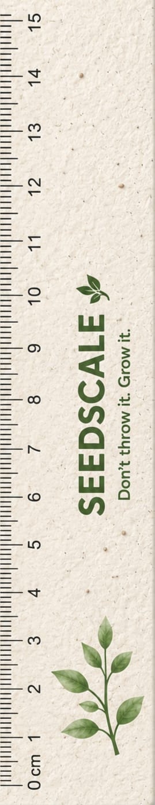

Seedscale is an innovative eco-friendly measuring scale made entirely from 100% biodegradable seed paper. It is specially designed for students, schools, offices and eco-conscious users who want to adopt sustainable products in their everyday life.
The product works like a normal measuring scale for drawing and measurement. However, unlike traditional plastic scales, Seedscale does not become waste after use. It can be planted in soil and transformed into a living plant.
Traditional plastic stationery products create unnecessary waste. Millions of plastic scales are discarded every year, which increases pollution and takes hundreds of years to decompose.
Seedscale introduces a circular product concept by combining stationery and nature. Made from recycled paper pulp and organic seeds, it provides a useful product experience while encouraging environmental responsibility.
✔ Replace plastic stationery waste with biodegradable alternatives.
✔ Promote environmental education among students and users.
✔ Create products that return benefits to nature.
✔ Encourage green gifting for schools, companies and events.
To create a sustainable future where everyday products help the environment instead of harming it.
To develop innovative eco-friendly products that reduce waste, spread environmental awareness and connect people with nature.